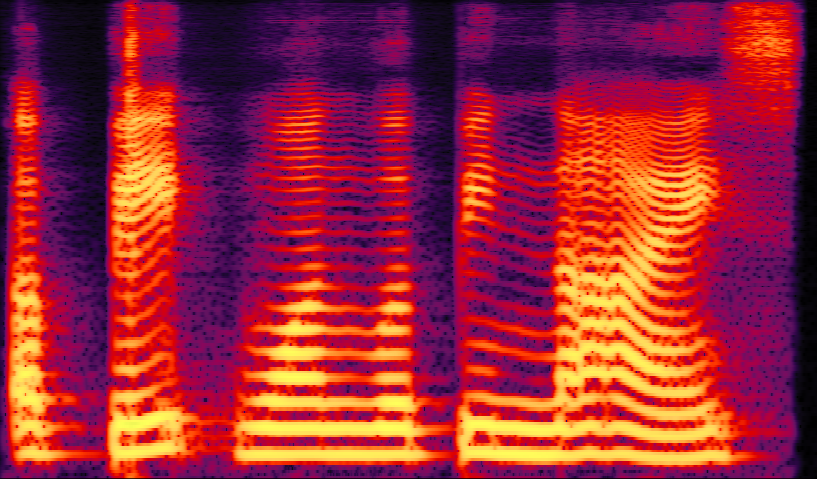
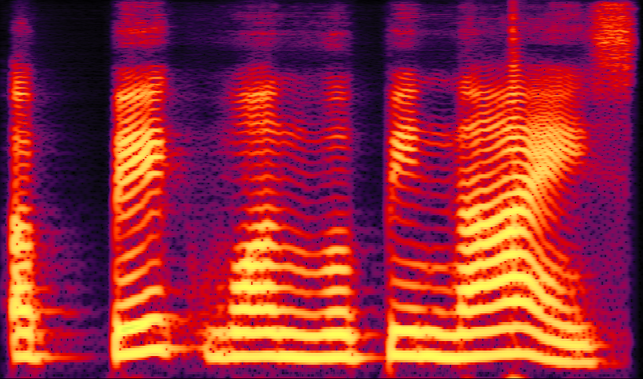
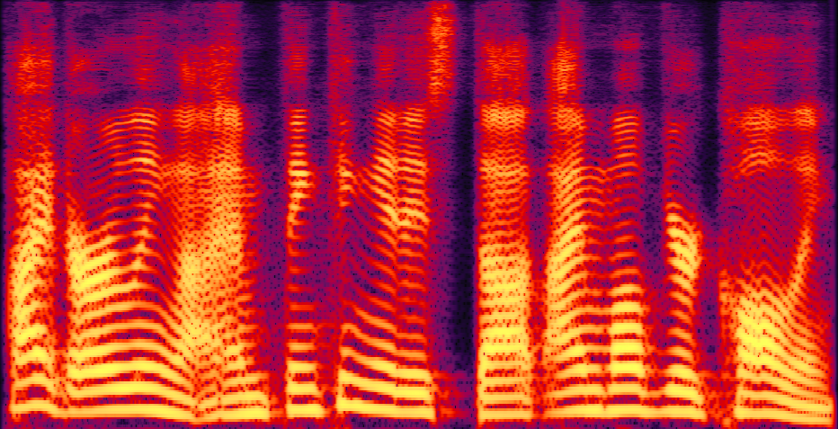

ABSTRACT
Conversational Speech Synthesis (CSS) aims to accurately express an utterance with the appropriate prosody and emotional inflection within a conversational setting. While recognising the significance of CSS task, the prior studies have not thoroughly investigated the emotional expressiveness problems due to the scarcity of emotional conversational datasets and the difficulty of stateful emotion modeling. In this paper, we propose a novel emotional CSS model, termed ECSS, that includes two main components: 1) to enhance emotion understanding, we introduce a heterogeneous graph-based emotional context modeling mechanism, which takes the multi-source dialogue history as input to model the dialogue context and learn the emotion cues from the context; 2) to achieve emotion rendering, we employ a contrastive learning-based emotion renderer module to infer the accurate emotion style for the target utterance. To address the issue of data scarcity, we meticulously create emotional labels in terms of category and intensity, and annotate additional emotional information on the existing conversational dataset (DailyTalk). Both objective and subjective evaluations suggest that our model outperforms the baseline models in understanding and ren-dering emotions. These evaluations also underscore the importance of comprehensive emotional annotations. Code andaudio samples can be found at: https://github.com/walker-hyf/ECSS.
EXPERIMENTS
We develop four neural TTS systems for a comparative study:
1) No emotional context modeling: The first baseline approach is a vanilla FastSpeech2 (Ren et al. 2021) with no context modeling.
2) GRU-based context modeling: This method involves only text modality and uses an RNN-based unidirectional GRU network to model contextual dependencies in a dialogue sequentially (Guo et al. 2020).
3) Homogeneous Graph-based emotion context modeling: In the homogeneous graph-based approach (Li et al.2022b), each past utterance in the conversation is represented as a node in the graph. Each node is initialized with the corresponding multi-modal features.
4) ECSS(Proposed): Emotion Rendering for Conversational Speech Synthesis with Heterogeneous Graph-Based Context Modeling.
Synthesized samples
Note: (*; *) denotes the (emotion; intensity) of the utterance.
1
| Dialogue History | |||
|---|---|---|---|
| 1. What are you reading? you've had your nose buried in that book since last night. (neutral; weak) 2. This book is so good. i just can't put it down! it's called 'the power of one'. (happy; medium) 3. I haven't read a book like that for as long as i can remember. (happy; weak) |
| Current Utterance | |||
|---|---|---|---|
| No emotional context modeling | GRU-based context modeling | Homogeneous Graph-based emotion context modeling | ECSS(Proposed) |
| 4. Me either. from the very first page, this author just pulled me right in! (happy; weak) | |||
2
| Dialogue History | |||
|---|---|---|---|
| 1. I am looking for a pan. (neutral; weak) 2. No problem. what size would you like? (neutral; weak) |
| Current Utterance | |||
|---|---|---|---|
| No emotional context modeling | GRU-based context modeling | Homogeneous Graph-based emotion context modeling | ECSS(Proposed) |
| 3. A big one would be nice. (neutral; weak) | |||
|  |  | ||
3
| Dialogue History | |||
|---|---|---|---|
| 1. Mary, can you tell me how you keep in shape? (neutral; weak) 2. You'll never be in shape until you eat less and take more exercise. (neutral; weak) 3. Now, tell me what you often eat. (neutral; weak) 4. I often eat fish and eggs. (neutral; weak) 5. Do you eat a lot of vegetables? (neutral; weak) 6. Oh yes, and fruits. i love fruits very much. (neutral; weak) 7. What do you like to drink? (neutral; weak) 8. Well, i never drink alcohol, coffee or tea. (neutral; weak) 9. Umm whatever would you like to drink? (neutral; weak) 10. I drink a lot of milk. i drink milk almost every day. (neutral; weak) 11. How often do you exercise? (neutral; weak) 12. Well, i walk every day. (neutral; weak) 13. It's a good diet and a regular exercise. (happy; weak) |
| Current Utterance | |||
|---|---|---|---|
| No emotional context modeling | GRU-based context modeling | Homogeneous Graph-based emotion context modeling | ECSS(Proposed) |
| 14. Yes, quite right. (happy; weak) | |||
 |
|||
4
| Dialogue History | |||
|---|---|---|---|
| 1.This bloody computer! (anger; medium) 2.Umm what seems to be the problem? (neutral; weak) |
| Current Utterance | |||
|---|---|---|---|
| No emotional context modeling | GRU-based context modeling | Homogeneous Graph-based emotion context modeling | ECSS(Proposed) |
| 3. My computer just crashed again for the third time today! (anger; medium) | |||
 |
|||
5
| Dialogue History | |||
|---|---|---|---|
| 1.Hi, dear, i've got your voice at last. (happy; weak) |
| Current Utterance | |||
|---|---|---|---|
| No emotional context modeling | GRU-based context modeling | Homogeneous Graph-based emotion context modeling | ECSS(Proposed) |
| 2. Hi, darling, i am thinking it is the time of your calling. (happy; medium) | |||
 |
 | ||
6
| Dialogue History | |||
|---|---|---|---|
| 1.May i help you? (neutral; weak) 2.This dress is beautiful. may i try it on? (neutral; weak) 3.I'm afraid you can't. (sad; weak) |
| Current Utterance | |||
|---|---|---|---|
| No emotional context modeling | GRU-based context modeling | Homogeneous Graph-based emotion context modeling | ECSS(Proposed) |
| 4. What is the material of this dress? (neutral; weak) | |||